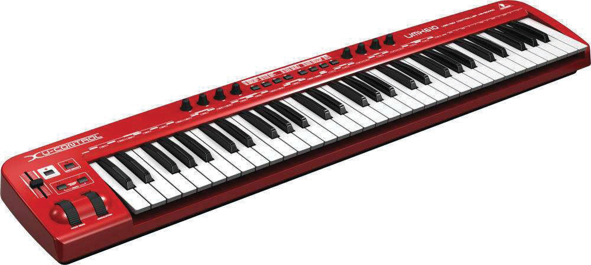
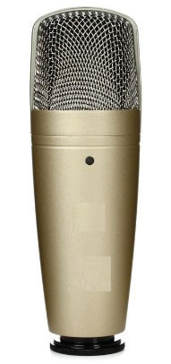

(c) Studio microphone:
A studio microphone is a device which captures the sound that is being recorded. The sound can be a vocal or a played musical instrument such as a guitar, zeze or any other instrument. Figure 7.6 shows an example of a studio microphone.

(d) Studio monitors:
Studio monitors are a pair of speakers used for listening to the music during the recording, mixing and mastering processes. They can also be found in radio and television studios. Studio monitors can be placed on a table or a stand. Figure 7.7 shows an example of a pair of studio monitors placed on stands.